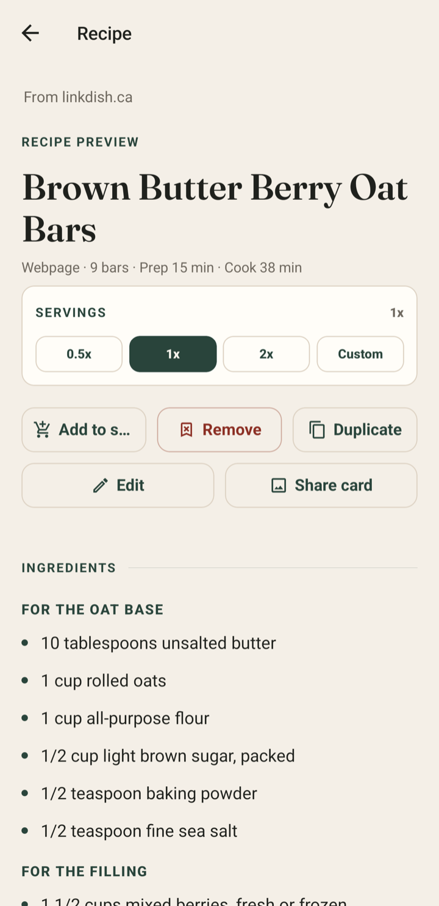

STATION 01 · SAVE
Your cookbook, minus the filing.
Recipes land in a consistent format with the original source, timing, servings, ingredients, and instructions intact.
- Clean recipe entries
- Original source kept visible
- Serving controls ready
Recipe clutter, dismissed.
LinkDish turns any recipe link into a clean, useful cookbook entry — ready to save, cook, scale, and shop.
Free to start · No card required · Android & web
On iPhone or iPad? Open LinkDish in Safari and add it to your Home Screen.
Clean recipe · Ready to use
Everything you need to cook, without the pop-ups or detours.
Source kept. The original recipe stays one tap away.

Open a featured recipe in LinkDish.
From browser tab to kitchen tool
The original source stays attached. The pop-ups, detours, and tiny type do not.
PASTE / SHARE
Paste it in the app or share it from your browser. LinkDish gets to work while the source stays credited.
CLEAN / ORGANIZE
The parts you cook from are pulled into one readable entry in your own cookbook.
COOK / SHOP
Scale servings, launch cook mode, start parsed timers, and send ingredients to your shopping list.
One recipe. Three stations.
STATION 01 · SAVE
Recipes land in a consistent format with the original source, timing, servings, ingredients, and instructions intact.
STATION 02 · COOK
Cook mode keeps one readable instruction in view and puts a timer beside the step that needs it.

STATION 03 · SHOP
Send what you need straight from the recipe, then keep personal and household groceries together.

For the whole table
Family keeps shared recipes and the household shopping list in the same place, even when dinner is a group project.
See LinkDish plansROBERT · SAVED
HOUSEHOLD · ADDED
DINNER · READY
Choose what fits
Try LinkDish without a card. Move to Plus or Family when you want a personal or shared saved cookbook.
Import a recipe and cook from a clean, readable version.
Start cookingKeep a personal saved cookbook with the kitchen tools built in.
See PlusShare a household cookbook, shopping list, and dinner workflow.
See FamilyGood to know
LinkDish is available as an Android app and as a web app. On iPhone and iPad, open the web app in Safari and add it to your Home Screen for an app-like experience.
No. Each recipe keeps its original source visible. LinkDish gives you a cleaner, more useful way to cook from it.
Public recipe pages work best. A site that requires a login, blocks access, or is temporarily unavailable may not import.
Visit LinkDish Support for quick checks, the support form, and privacy or account-deletion help.